01· Overview
Autonomous underwater vehicle (AUV) terminal docking imposes stringent requirements on the accuracy of relative pose estimation. During the final alignment stage of guide-rod-assisted platform docking stations, vision-based localization using planar light arrays is constrained by unstable semantic correspondences, insufficient keypoint localization accuracy, and the inherent two-solution ambiguity of planar Perspective-n-Point (PnP), making conventional methods inadequate for high-precision docking. To address these challenges, this paper proposes LightPoseNet-Select, a learning-geometry integrated framework for relative pose estimation. A semantically annotated underwater docking dataset is first constructed using Unreal Engine 5 (UE5). Based on this dataset, a keypoint detection network, LightPoseNet, is developed to predict semantically labeled light points. A pose-sensitive regularization term is further introduced to guide the network toward keypoints that have greater influence on pose estimation, thereby establishing reliable 2D–3D correspondences. To resolve the intrinsic two-solution ambiguity of planar configurations, Infinitesimal Plane-Based Pose Estimation (IPPE) is employed to generate two pose candidates, and BranchSelectorNet is designed for learning-based branch selection. By jointly exploiting image appearance, geometric projections, and numerical pose features, BranchSelectorNet can correct erroneous branches produced by conventional reprojection-based ranking under degenerate viewpoints and thus reliably determine the correct pose. Experimental results show that LightPoseNet-Select achieves a mean keypoint localization error of 1.037 px. BranchSelectorNet successfully corrects seven catastrophic cases, reducing their mean rotation error from 39.36° to 1.38°. Further UE5-Simulink closed-loop simulations demonstrate successful vision-guided docking under different initial yaw angles, with a mean terminal position error of 0.0296 m. These results demonstrate that the proposed method provides accurate and reliable relative pose estimation for terminal docking with planar stations, offering a robust visual perception basis for autonomous AUV docking.
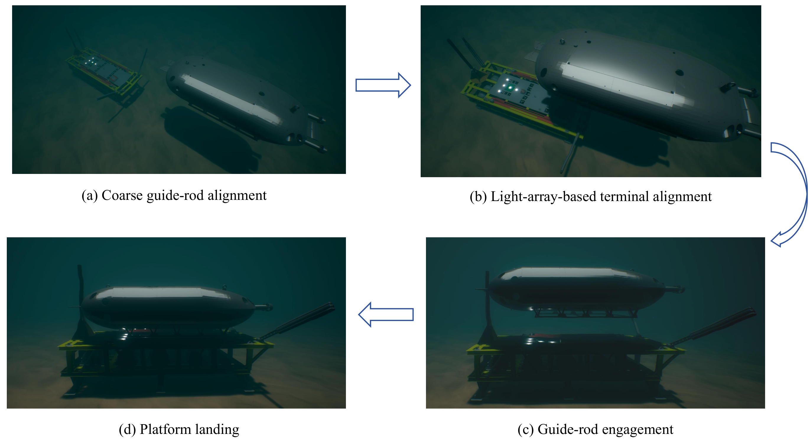
02· Method
Overall Framework
The proposed LightPoseNet-Select framework establishes an end-to-end visual pose estimation pipeline consisting of semantic light-point detection, planar pose candidate generation, geometric refinement, and learning-based branch discrimination. LightPoseNet simultaneously predicts the 2D locations, visibility confidences, and geometric weights of five light points with fixed semantic correspondences. Based on the predicted 2D–3D correspondences, IPPE generates planar pose candidates, which are refined using weighted Levenberg–Marquardt (LM) optimization and filtered according to physical feasibility constraints including depth and pose range. If a valid candidate pair remains, BranchSelectorNet performs pairwise comparison between the two pose branches, and its prediction replaces the baseline branch only when the selection confidence exceeds a predefined threshold.
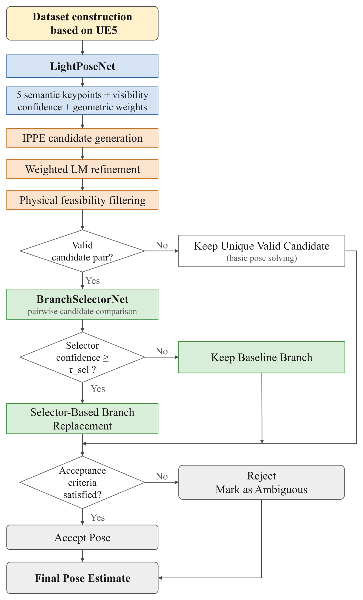
UE5 Dataset Construction
The UE5-based underwater docking simulation environment consists of an AUV, a docking station equipped with a T-shaped five-light planar array, and an onboard virtual camera. The AUV approaches the docking station along predefined spline trajectories; the camera is rigidly mounted beneath the forward section with a 45° downward pitch, capturing 1280×720 images at 10 Hz with a 100° field of view. To cover typical visual degradation encountered during terminal docking, water fog density, scene illumination, and marine-snow particle density (Niagara) are varied, simulating light attenuation, scattering, color shift, and image blur. A dedicated data-collection actor synchronously captures RGB images together with camera intrinsics, AUV and station poses, and light-array geometry, from which ground-truth 6-DoF relative poses, semantic keypoint projections, and visibility labels are derived. The dataset is split at the trajectory level to avoid information leakage from temporally adjacent frames.
| Set | Trajectories | Images | Frame Ratio (%) |
|---|---|---|---|
| Training | 33 | 5,364 | 54.95 |
| Validation | 11 | 2,192 | 22.46 |
| Test | 11 | 2,205 | 22.59 |
| Total | 55 | 9,761 | 100.00 |
Dataset split (trajectory-level 6:2:2). The test set contains 2,205 frames, of which 1,897 contain at least four ground-truth visible light points and are used for pose evaluation.
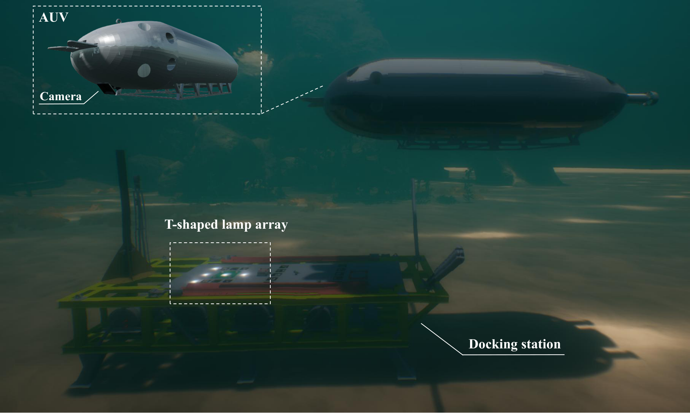
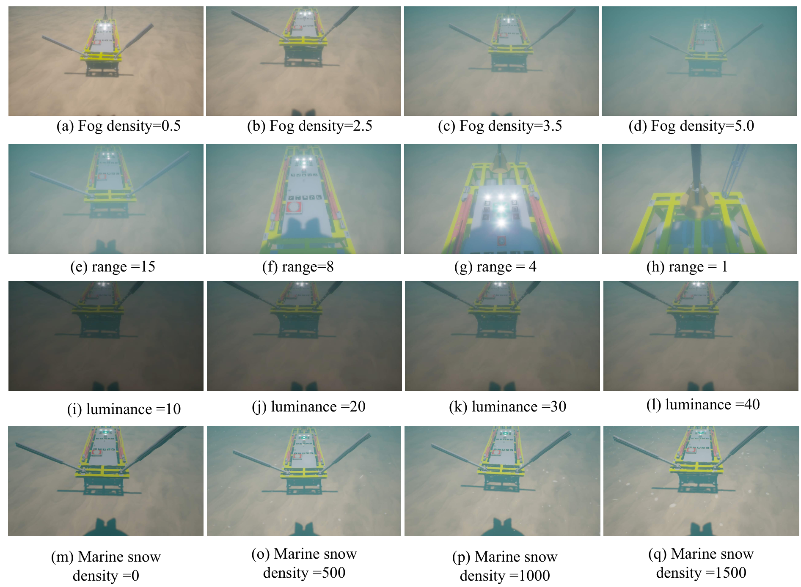
Semantic Keypoint Prediction with LightPoseNet
LightPoseNet formulates light-array detection as a named semantic keypoint prediction task, in which each output channel is assigned to a predefined light point — the predicted keypoints preserve the same ordering as the 3D light-array model, eliminating the need for heuristic sorting or matching. LightPoseNet employs three parallel prediction heads on top of shared features: a heatmap head H (where the light point is located), a confidence head C (whether the observation is reliable), and a geometric-weight head W (how strongly the observation should constrain pose estimation). Keypoint coordinates are decoded with temperature-scaled Soft-Argmax, yielding continuous sub-pixel coordinates; confidence and weight values are bilinearly sampled at the decoded locations, and a fused active-point selection score determines which light points enter the pose solver.
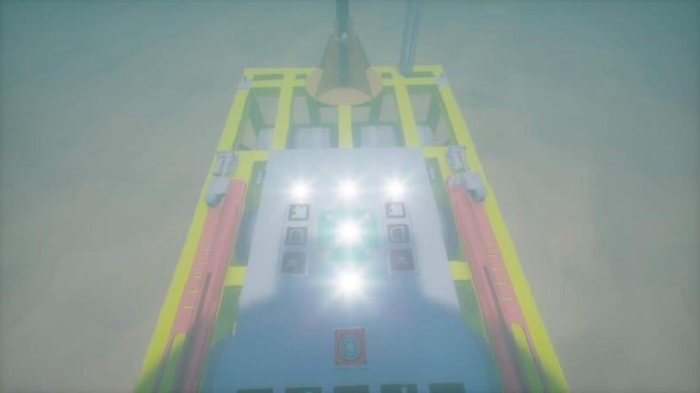
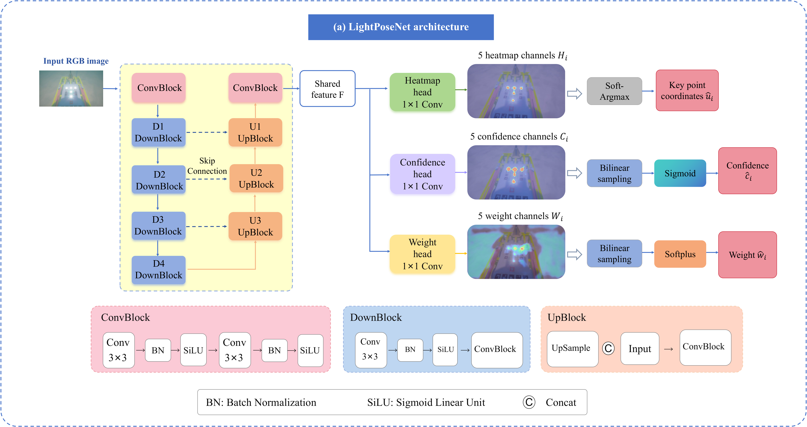
Multi-Task Loss and Pose-Sensitive Regularization
Training combines heatmap supervision (including peak suppression on invisible channels), visibility supervision at both ground-truth and predicted locations, and geometry-weighted coordinate regression. A pose-sensitive regularization further stacks the projection Jacobians of all visible light points and solves a weighted damped least-squares problem, obtaining the virtual 6-DoF pose perturbation that best explains the current keypoint residuals; penalizing this perturbation aligns pixel-level learning with downstream pose accuracy. The regularization is introduced gradually after a warm-up stage.
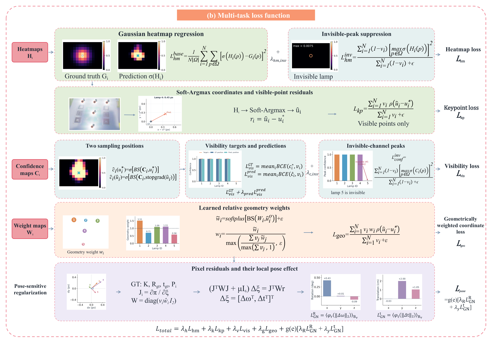
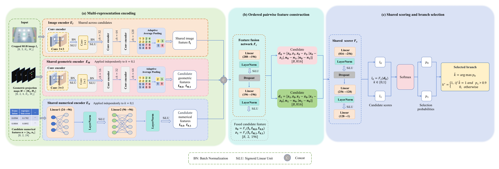
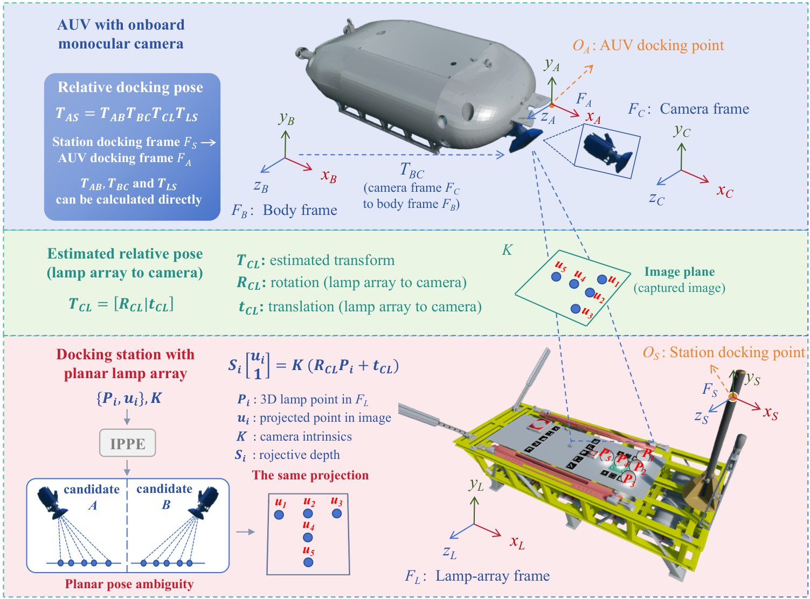
03· Experiment Recordings
UE5–Simulink Closed-Loop Docking Simulation
To evaluate the applicability of the proposed vision module under closed-loop control, a docking simulation environment is constructed in UE5.8 and integrated with Simulink and a Python-based vision-processing node. The AUV is modeled as a simplified 6-DOF rigid body, and the control objective is to drive the DockingPoint attached to the AUV toward the Station Docking Point defined on the docking station. Images captured by UE are transmitted to the Python vision node through a local HTTP service, where the same LightPoseNet and BranchSelectorNet pipeline used in the offline experiments is executed. After IPPE-based pose estimation and confidence gating, the system outputs the docking-point position and orientation errors, branch-selection confidence, reprojection error, and timestamp. Simulink then converts the visual pose errors into velocity commands using a simplified proportional controller and transmits the commands to UE through UDP.
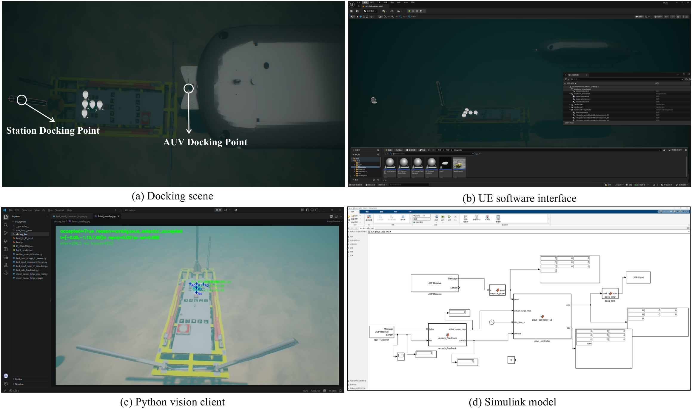
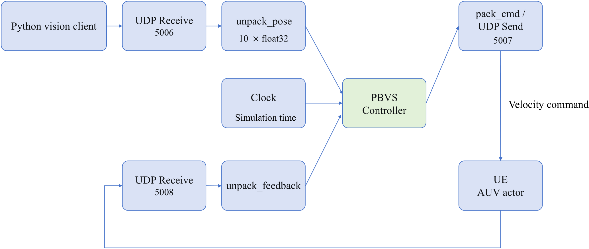
| State | Entry condition | Control action | Interpretation |
|---|---|---|---|
| TRACK | A new pose estimate passes the quality and temporal-consistency gates | Generate bounded velocity commands from the current pose error | Vision-based closed-loop tracking |
| BLIND | No valid observation is received for more than 2 s after entering the safe near-field region | Propagate the vehicle state using velocity feedback and recent command history, with reduced velocity limits | Estimated-state control; final performance still verified against ground truth |
| DONE | UE geometric docking condition is satisfied, the internal estimate reaches the target, or timeout occurs | Command zero velocity | A UE docking-completion flag indicates successful simulated docking |
Controller states and docking criteria in the PBVS closed-loop simulation.
Closed-Loop Visual Docking Experiments
Five simulation trials are conducted with the AUV initialized approximately 10 m in front of the docking point, at initial yaw angles of 0°, −10°, −20°, +10°, and +20°. In all cases, the AUV docking point converges toward the Station Docking Point, with terminal distances of 0.015–0.040 m (mean 0.0296 m) — all within the 4 cm position tolerance. Left: onboard camera view with real-time semantic keypoint detection and pose estimation overlays. Right: reference top view of the AUV approaching the docking station. Click any video to play; all recordings are muted.
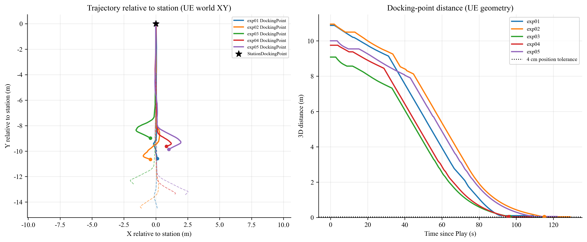
Terminal Accuracy of the Five Runs
| Trial | Initial yaw | Initial distance (m) | Terminal distance (m) |
|---|---|---|---|
| 1 | 0° | 10.9 | 0.015 |
| 2 | −10° | 10.9 | 0.022 |
| 3 | −20° | 9.1 | 0.035 |
| 4 | +10° | 9.8 | 0.036 |
| 5 | +20° | 10.0 | 0.040 |
Initial and terminal docking-point distances under different initial yaw angles. Mean terminal distance: 0.0296 m — all five trials terminate within the positional tolerance of 4 cm.
Docking Sequences under Different Initial Yaw Angles
Each sequence shows the initial position, an intermediate approach state, and the final docking state.
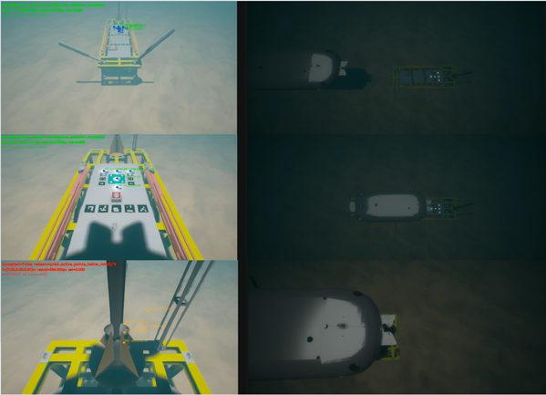
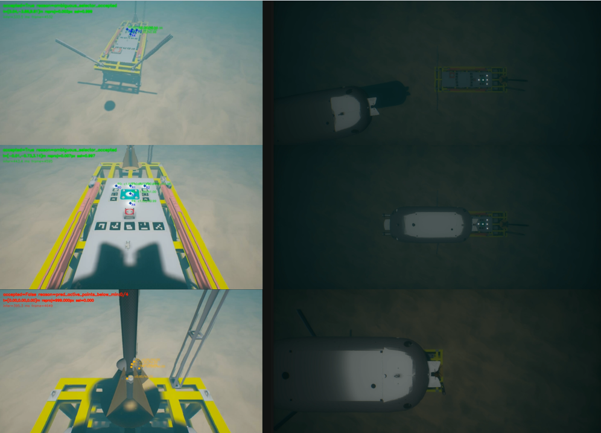
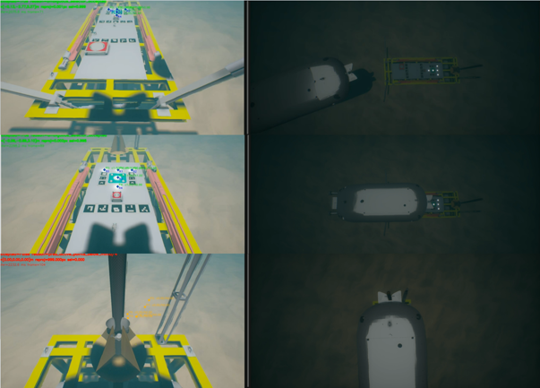
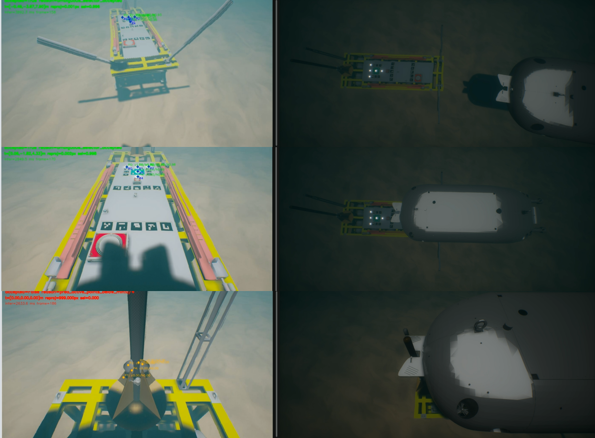
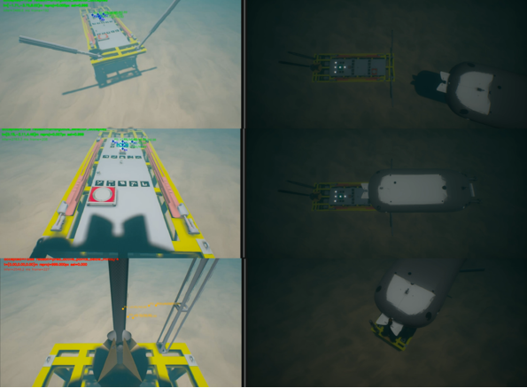
04· Qualitative Results
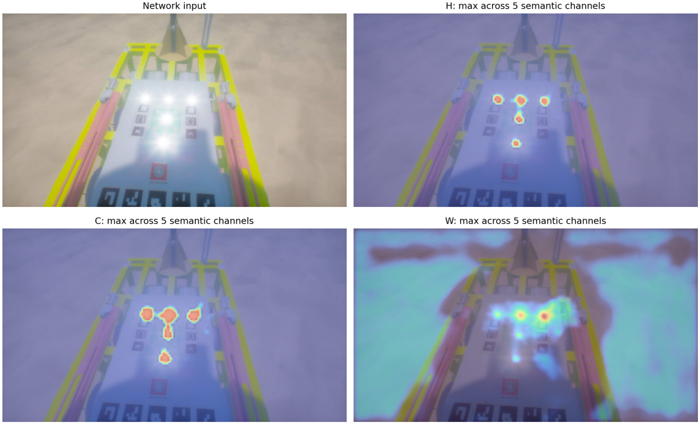
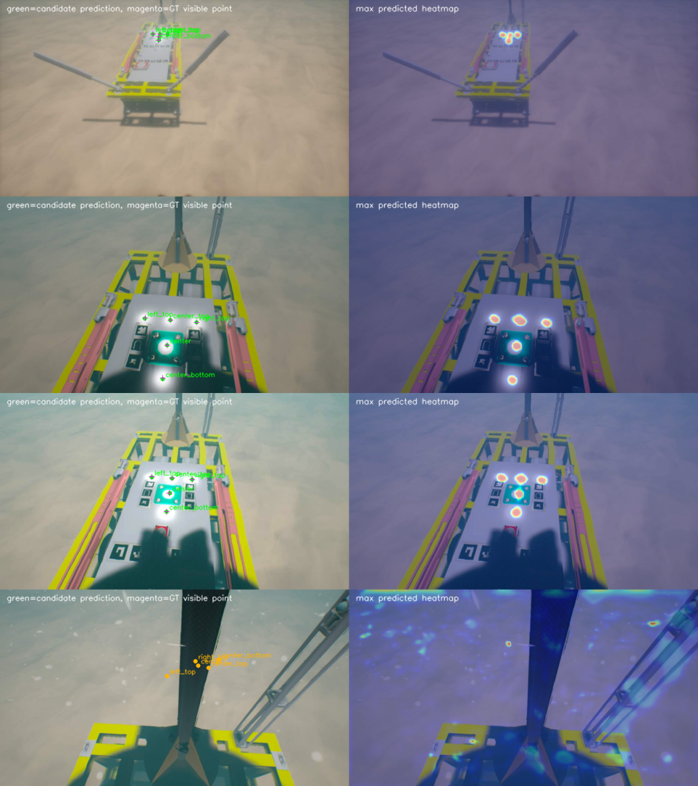
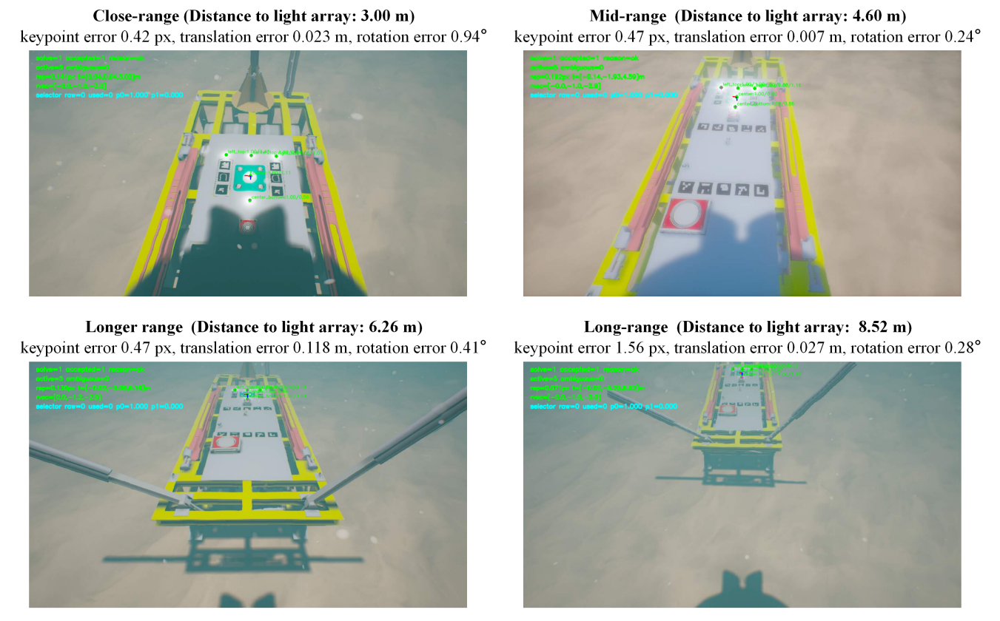
05· Evaluation
Keypoint Localization Performance
The test set contains 2,205 images with a total of 9,636 visible semantic light points. LightPoseNet achieves a mean localization error of 1.037 px and a median error of 0.755 px, while 95% of the visible light points exhibit errors below 2.329 px. The corresponding NME is 0.01236 — the average localization error accounts for only 1.236% of the projected light-array diagonal. The PCK reaches 90.87% at 2 px and 99.83% at 5 px.
| Keypoint | Count | Mean (px) | Median (px) | P95 (px) | NME |
|---|---|---|---|---|---|
| All | 9,636 | 1.037 | 0.755 | 2.329 | 0.01236 |
| Upper-left | 1,968 | 1.110 | 0.826 | 2.843 | 0.01418 |
| Upper-center | 1,967 | 0.864 | 0.681 | 2.126 | 0.01080 |
| Upper-right | 1,970 | 1.277 | 0.732 | 1.977 | 0.01182 |
| Center | 1,899 | 0.938 | 0.736 | 2.260 | 0.01192 |
| Lower-center | 1,832 | 0.987 | 0.817 | 2.244 | 0.01310 |
Pixel-level localization error results on the test set. NME normalizes the error by the diagonal length of the bounding box enclosing the five ground-truth projected light points.
| Keypoint | PCK@2 (%) | PCK@5 (%) | PCK@10 (%) | PCK-AUC@10 px |
|---|---|---|---|---|
| All | 90.87 | 99.83 | 99.95 | 0.9048 |
| Upper-left | 83.74 | 99.64 | 100.00 | 0.8890 |
| Upper-center | 93.49 | 99.85 | 100.00 | 0.9136 |
| Upper-right | 95.23 | 99.80 | 99.80 | 0.9126 |
| Center | 91.84 | 99.95 | 99.95 | 0.9074 |
| Lower-center | 90.01 | 99.95 | 100.00 | 0.9013 |
PCK and PCK-AUC statistics on the test set.
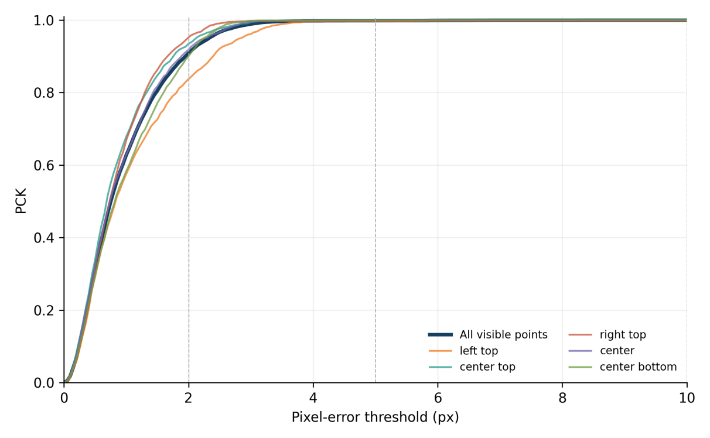
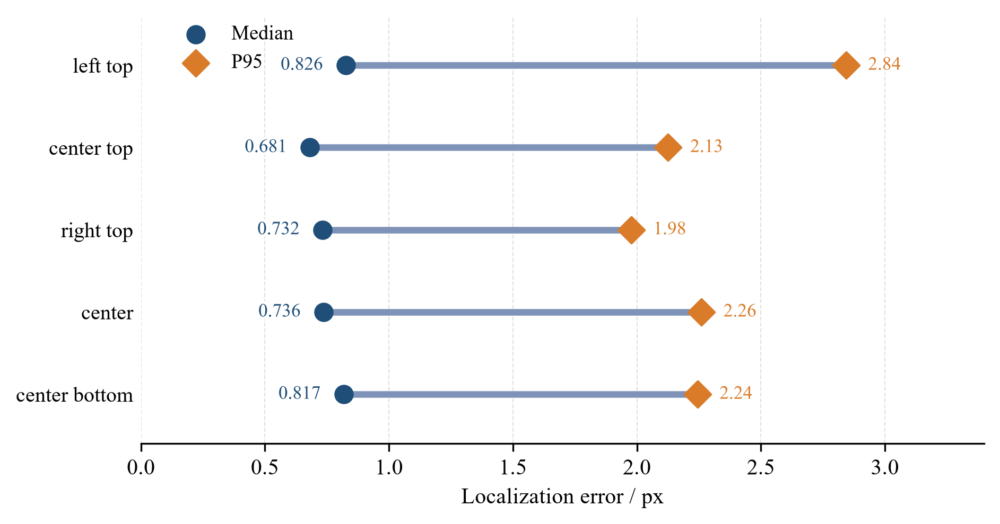
Visibility Prediction
Precision of visibility decisions
Recall of visibility decisions
F1 score
At the fixed inference threshold, only six visible light points are missed and seven invisible points are falsely activated.
Pose Estimation Results
Evaluated on the 1,897 evaluable test frames (at least four ground-truth visible light points). Both the default-candidate pipeline and the branch-selection pipeline accept 1,896 of 1,897 frames — an acceptance rate of 99.95%.
| Method | Accepted / Evaluable | Translation L2 (m) | Depth err (m) | Rotation err (°) |
|---|---|---|---|---|
| Default candidate | 1896 / 1897 | 0.1413 | 0.1259 | 1.488 |
| Strict rejection | 1709 / 1897 | 0.1262 | 0.1130 | 1.388 |
| BranchSelectorNet | 1896 / 1897 | 0.1403 | 0.1250 | 1.348 |
Under the same output coverage, BranchSelectorNet reduces the mean translation error from 0.1413 m to 0.1403 m, the mean depth error from 0.1259 m to 0.1250 m, and the mean rotation error from 1.488° to 1.348°. The strict-rejection strategy yields lower conditional mean errors but rejects 188 ambiguous frames and reduces the acceptance rate to approximately 90% — the expected accuracy–coverage trade-off.
Accuracy vs. Distance
The docking station is 8 m long, and the planar light array is primarily used for terminal guidance over an approximate range of 2–10 m. The mean translation errors are 0.029 m and 0.041 m within the 2–4 m and 4–6 m ranges, increasing to 0.101 m at 6–8 m and 0.268 m beyond 8 m. Rotation error does not increase monotonically with distance. At distances below 2 m, the onboard camera can no longer simultaneously observe all five light points, and the reduced number of correspondences leads to a noticeable degradation in pose accuracy.
| Distance | Accepted frames | Mean translation error (m) | Mean rotation error (°) |
|---|---|---|---|
| < 2 m | 6 | 0.064 | 8.502 |
| 2–4 m | 419 | 0.029 | 1.724 |
| 4–6 m | 365 | 0.041 | 0.894 |
| 6–8 m | 345 | 0.101 | 1.190 |
| ≥ 8 m | 761 | 0.268 | 1.373 |
Pose errors at different distance ranges.
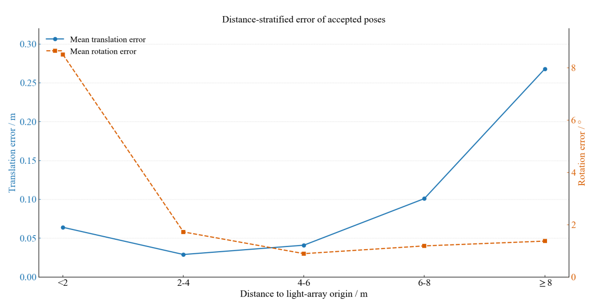
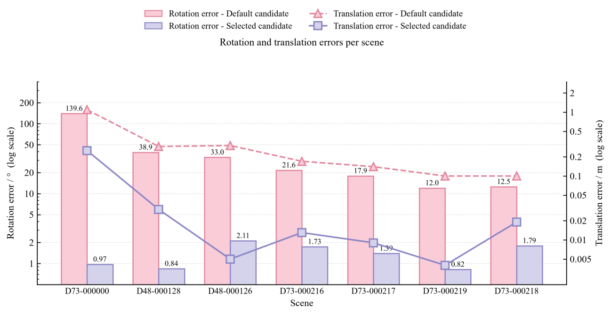
| Distance | |Δx| (cm) | |Δy| (cm) | |Δz| (cm) | |δθx| (°) | |δθy| (°) | |δθz| (°) |
|---|---|---|---|---|---|---|
| < 2 m | 0.32 | 3.31 | 5.48 | 8.200 | 1.828 | 0.980 |
| 2–4 m | 0.17 | 0.70 | 2.75 | 1.472 | 0.561 | 0.250 |
| 4–6 m | 0.48 | 1.00 | 3.84 | 0.522 | 0.512 | 0.303 |
| 6–8 m | 0.65 | 3.83 | 9.23 | 0.813 | 0.476 | 0.592 |
| ≥ 8 m | 1.56 | 12.36 | 23.56 | 0.646 | 0.902 | 0.504 |
Mean absolute axis-wise translation and rotation component errors at different distances. Translation error is dominated by the camera-frame z-axis component, consistent with the inherent depth-direction degeneracy of planar configurations.
Comparison with Conventional Vision and Generic Keypoint Detection Methods
Two categories of baselines are considered: a conventional image-processing pipeline (grayscale conversion, threshold segmentation, morphological processing, connected-component extraction, and centroid estimation, with Hungarian matching used only for evaluation), and generic deep-learning keypoint detectors YOLOv8n-pose and YOLO11n-pose trained on the UE5 annotations. All methods use exactly the same training, validation, and test trajectories; deep-learning methods are evaluated over three random seeds (42, 123, 3407) with mean ± sample standard deviation reported.
| Method | Mean (px) | Median (px) | P90 (px) | P95 (px) | NME | Coverage (%) |
|---|---|---|---|---|---|---|
| Threshold+Blob | 3.727 | 1.289 | 3.168 | 18.475 | 0.02783 | 65.04 |
| YOLOv8n-pose | 1.798 ± 0.254 | 1.425 ± 0.119 | 3.406 ± 0.692 | 4.513 ± 0.996 | 0.01748 ± 0.00164 | 99.76 ± 0.06 |
| YOLO11n-pose | 1.796 ± 0.245 | 1.460 ± 0.232 | 3.280 ± 0.435 | 4.385 ± 0.539 | 0.01801 ± 0.00269 | 99.74 ± 0.14 |
| LightPoseNet | 0.957 ± 0.039 | 0.770 ± 0.033 | 1.886 ± 0.074 | 2.248 ± 0.122 | 0.01211 ± 0.00052 | 100.00 ± 0.00 |
Localization error distribution and detection coverage. LightPoseNet reduces the mean localization error from 1.798 px to 0.957 px relative to YOLOv8n-pose — a 46.8% reduction.
| Method | PCK@2 (%) | PCK@5 (%) | PCK@10 (%) | PCK-AUC | Vis. F1 (%) | Params (M) | 2D FPS |
|---|---|---|---|---|---|---|---|
| Threshold+Blob | 48.48 | 61.19 | 61.52 | 0.5282 | – | – | 642.0 |
| YOLOv8n-pose | 70.19 ± 5.21 | 95.87 ± 2.47 | 99.30 ± 0.44 | 0.8192 ± 0.0246 | 99.86 ± 0.03 | 3.083 | 95.8 |
| YOLO11n-pose | 69.85 ± 8.23 | 96.22 ± 1.20 | 99.44 ± 0.19 | 0.8191 ± 0.0250 | 99.85 ± 0.06 | 2.662 | 72.1 |
| LightPoseNet | 92.08 ± 1.43 | 99.84 ± 0.01 | 99.97 ± 0.03 | 0.9052 ± 0.0036 | 99.89 ± 0.09 | 6.377 | 131.9 |
Keypoint detection metrics and inference efficiency statistics. PCK@2 improves from 70.19% (YOLOv8n-pose) to 92.08% — a gain of 21.89 percentage points. 2D FPS is measured with batch size 1 on the RTX 4070 SUPER and is not directly comparable with the 63.52 FPS of the complete pipeline.
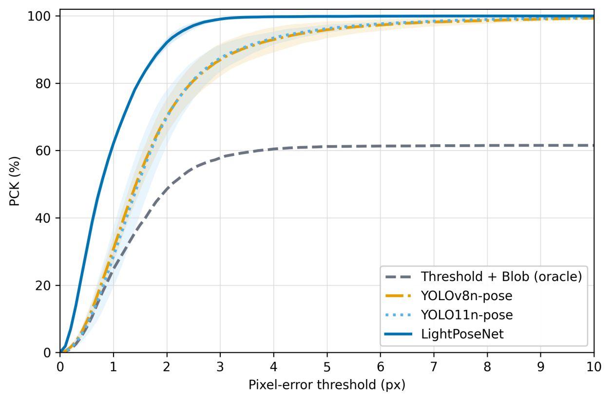
To evaluate how frontend keypoint quality propagates to downstream pose estimation, the three frontends are further compared under an identical geometric backend (IPPE with unweighted LM refinement; geometric weighting, BranchSelectorNet, and ambiguity rejection disabled), isolating the contribution of frontend keypoint localization.
| Frontend | Solve rate (%) | Rotation mean / median / P95 (°) | Translation mean / median / P95 (m) | >10° frames | Reproj. RMSE mean / median / P95 (px) |
|---|---|---|---|---|---|
| YOLOv8n-pose | 95.99 ± 0.00 | 4.503 ± 0.420 / 1.660 ± 0.232 / 6.283 ± 1.135 | 0.149 ± 0.007 / 0.109 ± 0.019 / 0.413 ± 0.055 | 48.0 ± 17.1 | 0.441 ± 0.050 / 0.320 ± 0.069 / 1.118 ± 0.061 |
| YOLO11n-pose | 96.01 ± 0.03 | 3.362 ± 1.658 / 1.588 ± 0.233 / 6.810 ± 3.111 | 0.154 ± 0.008 / 0.108 ± 0.015 / 0.457 ± 0.057 | 44.0 ± 43.1 | 0.427 ± 0.043 / 0.298 ± 0.049 / 1.140 ± 0.309 |
| LightPoseNet | 95.87 ± 0.26 | 1.786 ± 0.496 / 0.992 ± 0.019 / 2.931 ± 0.121 | 0.145 ± 0.008 / 0.071 ± 0.002 / 0.603 ± 0.044 | 7.3 ± 6.4 | 0.235 ± 0.020 / 0.198 ± 0.008 / 0.539 ± 0.061 |
Pose-estimation performance of different frontend keypoint detectors under the same IPPE and unweighted-LM backend. LightPoseNet reduces the number of catastrophic frames with rotation errors above 10° from 48.0 and 44.0 (YOLO baselines) to only 7.3, and achieves a mean reprojection RMSE of 0.235 px.
Ablation Study
Five progressively augmented LightPoseNet variants are constructed: A is the baseline heatmap-prediction model; B introduces Soft-Argmax for continuous coordinate decoding; C adds the visibility-confidence branch C; D incorporates the geometric-weight branch W; E is the full model with the pose-sensitive Gauss-Newton regularization term. All results are reported as the mean ± standard deviation over multiple independent runs.
| Variant | Soft-Argmax | C | W | GN | Mean (px) | PCK@2 (%) | NME |
|---|---|---|---|---|---|---|---|
| A Base | × | × | × | × | 49.785 ± 8.291 | 1.22 ± 0.70 | 0.59549 ± 0.10712 |
| B | ✓ | × | × | × | 0.919 ± 0.029 | 92.20 ± 1.43 | 0.01345 ± 0.00062 |
| C | ✓ | ✓ | × | × | 0.946 ± 0.012 | 91.81 ± 0.84 | 0.01373 ± 0.00014 |
| D | ✓ | ✓ | ✓ | × | 0.951 ± 0.032 | 92.02 ± 0.65 | 0.01391 ± 0.00059 |
| E Full | ✓ | ✓ | ✓ | ✓ | 0.976 ± 0.024 | 92.00 ± 0.67 | 0.01382 ± 0.00012 |
Model components and 2D keypoint localization results.
| Variant | Rotation mean (°) | Rotation P95 (°) | Translation mean (m) | Translation P95 (m) | Solve rate (%) |
|---|---|---|---|---|---|
| A Base | – | – | – | – | 0.00 ± 0.00 |
| B | 2.611 ± 1.213 | 3.338 ± 0.315 | 0.144 ± 0.004 | 0.537 ± 0.011 | 99.79 ± 0.14 |
| C | 1.701 ± 0.246 | 3.132 ± 0.223 | 0.153 ± 0.006 | 0.589 ± 0.033 | 99.93 ± 0.03 |
| D | 1.545 ± 0.104 | 3.122 ± 0.249 | 0.142 ± 0.016 | 0.556 ± 0.072 | 99.89 ± 0.05 |
| E Full | 1.495 ± 0.086 | 3.059 ± 0.264 | 0.140 ± 0.011 | 0.548 ± 0.077 | 99.86 ± 0.15 |
Pose-estimation results with a fixed geometric backend.
The baseline variant A fails to produce stable valid pose estimates (solve rate 0%). Soft-Argmax is the key component for establishing stable keypoint localization: variant B reduces the mean error from 49.785 px to 0.919 px and raises the solve rate to 99.79%. The confidence branch (C) does not further reduce image keypoint error but cuts the downstream mean rotation error by approximately 34.9% (2.611° → 1.701°) by suppressing unreliable observations. The geometric-weight branch (D) improves the mean rotation error by a further 9.2% and the mean translation error by 7.2% through weighted geometric refinement. The full model (E) achieves the best overall pose-estimation performance — compared with variant B, the mean rotation error is reduced by approximately 42.7% — while its 2D localization error is slightly higher than that of B, indicating that the GN regularization does not simply minimize the Euclidean pixel error but encourages the network to focus on light-point observations that are more sensitive to camera-pose perturbations. Optimizing image-space accuracy alone is insufficient; coupling keypoint learning with downstream geometric pose estimation leads to better task-level performance.
Effectiveness Analysis of BranchSelectorNet
BranchSelectorNet is primarily designed to correct severe branch-selection failures produced by conventional reprojection-based ranking in a small number of frames. Among the 1,896 valid dual-candidate frames, 7 severe branch-selection failures remain after the baseline geometric pose-estimation pipeline, producing a pronounced long-tail error distribution that includes large-angle pose flips. With a fixed confidence-gating threshold of 0.90, BranchSelectorNet correctly switches the branch in 7 frames without introducing any incorrect switches. Over the same set of 1,896 accepted frames, the number of catastrophic cases with rotation errors greater than 10° is reduced from 10 to 3, the number exceeding 30° decreases from 4 to 1, and the only frame with a rotation error greater than 90° is completely eliminated.
Mean rotation error of the seven correctly corrected catastrophic frames (−96.5%)
Their mean translation error (−85.0%)
Frame D73-000000: switched at 0.9988 confidence
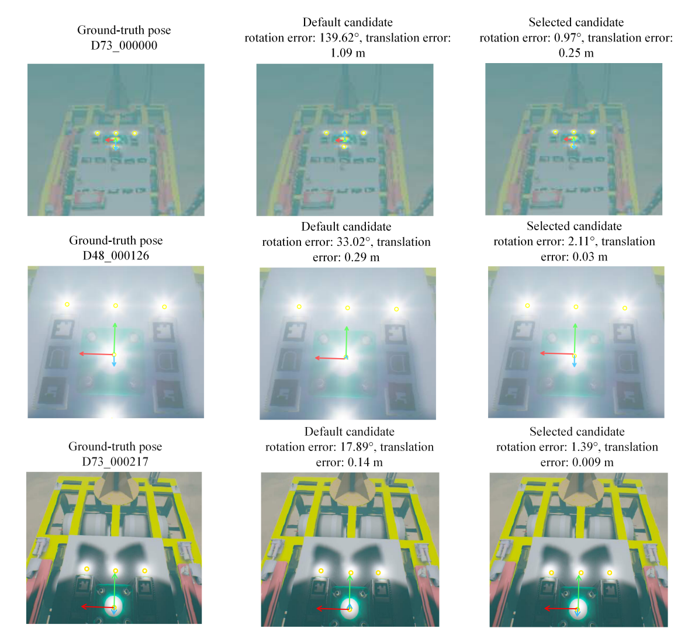
Runtime
Average latency of the complete pipeline on an RTX 4070 SUPER (12 GB)
Average processing rate of the full pipeline
LightPoseNet 6.377 M + BranchSelectorNet 0.708 M (≈28.34 MB under FP32)
06· Citation
@article{lightposenet2026,
title = {LightPoseNet-Select: A Learning-Geometric Framework for Relative Pose Estimation in AUV Docking Using Planar Light Arrays},
author = {},
journal = {TODO},
year = {2026}
}